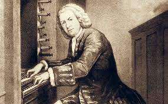

J.S. Bach - A Tribute

Bach's organ works are widely considered to represent the high point of north German organ music in the Baroque era
Timeline of J.S. Bach's Life
1685
Born in Eisenach, Duchy of Saxe-Eisenach (in Thuringia) into a family of musicians
1694
Bach's mother dies and his father dies 8 months later
Bach moves in with his eldest brother Johann Christoph who was a pupil of Johann Pachelbel
1700
Attends the prestigious St Michael's School in Luneburg for two years, where he studies organ under Georg Bohm
1702
Graduates from St. Michael's
1703
Appointed as a court musician in the chapel of Duke Johann Ernst III in Weimar. In August he also become organist at the New Church in Arnstadt
1705
Bach travels 280 miles on foot to visit the great Danish organist and composer Buxtehude in Lubeck
1706
Bach composes his famous Passacaglia and Fugue in C Minor BWV 582 and Toccata in D Minor BWV 565
Bach composes an Easter cantata Christ lag in Todesbanden BWV 4 as part of his application for the post of organist at Blasius Church in Muhlhausen which was accepted
1707
Bach marries Maria Barbara Bach (his second cousin)
1708
Bach returns to Weimar, this time as an organist
Birth of his first child Catharina Dorothea
1710
Birth of Willhelm Friedman Bach
1713
Composition of Bach's English Suites BWV 806-811 for harpsichord
1714
Bach promoted to Konzermeister which required performing a church cantata monthly in the castle church
Composition of Christen, ätzet diesen Tag BWV 63 Bach's first Christmas cantata
Birth of Carl Philipp Emmanuel Bach
1717
Hired as Kapellmeister at the court of Prince Leopold of Anhalt-Kotten
Finishes work on his Orgelbuchlein BWV 599-644 (Little Organ Book) a set of 45 chorale preludes for the organ
1720
Completes his six Sonatas and Partitas for solo violin BWV 1001–1006
Bach's wife dies suddenly and unexpectedly while Bach was away in Carlsbad
1721
Bach marries Anna Magadelena in December
Bach presents his 6 Brandenburg Concertos to Christian Ludwig, the Margrave of Brandenburg
1722
Bach finishes the first book of his Well-Tempered Clavier BWV 846-893, a set of preludes and fugues in every major and minor key
Composition of Bach's French Suites BWV 812-917 for harpsichord
1723
Appointed Thomaskantor at St Thomas Church in Leipzig
Bach completes composition of his Magnificat BWV 243a
1724
Bach begins work on composing a series of church cantatas for every Sunday of the ecclesiatical calendar
Composition of the St. John's Passion one of his most famous choral works
1729
Composition of the St. Matthew's Passion one of his most famous choral works
1730
Bach completes his Six Partitas BWV 825-830 for harpsichord
1731
First performance of one of Bach's most famous church cantatas Wachet auf, ruft uns die Stimme, BWV 140
1733
Bach composes the Kyrie and Gloria for his Mass in B Minor
1739
Completes his Clavier-Ubung III which employed much use of the Stile Antico and included the St Anne Fugue BWV 552. The last years of his life marked a style shift to older polyphonic forms
1741
Bach completes the Art of Fugue a series of canons and fugues which increase in complexity based on a single theme
The Goldberg variations are published a series of theme with variations
1742
Bach completes the second book of his Well-Tempered Clavier with another set of preludes and fugues in every major and minor key
1747
Bach completes his Musical Offering, a series of canons and ricercars based on a theme given to him by Frederick the Great of Prussia
1749
Bach finishes his Mass in B Minor
1750
Bach becomes blind and dies from complications during eye surgery